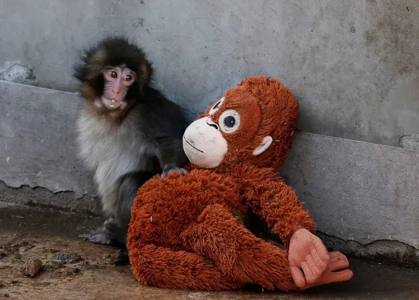

Punch é um filhote de macaco japonês que viralizou nas redes sociais no início de 2026 após ser rejeitado por sua mãe biológica logo após o nascimento e adotar um orangotango de pelúcia como "mãe substituta".
Sem a presença da mãe do punch ele começou carregar um orangotango de pelucia como se fosse sua mãe. O punch quando se sentia insegurro ele abraçava o orangotangode pelucia como fosse sua mãe


 Video do punch
Video do punch
| Informações | Detalhes |
|---|---|
| nome | Punch |
| Especie | macaco-japonês (Macaca fuscata) |
| nascimento | julho de 2025 |
| Local | zoologico de Ichikawa, Japão |
| Por que ele ficou famoso? | após desenvolver uma relação comovente com um orangotango de pelúcia que lhe foi dado como substituto de sua mãe pelos tratadores que o criaram. |